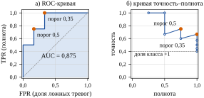

8 Метрики качества классификации
Логистическая регрессия обучается минимизацией логистической потери, но о качестве классификатора судят по другим величинам. Какие именно величины выбрать, зависит от задачи: врача интересует, сколько больных пациентов модель пропустила, банк — сколько надёжных заёмщиков она отвергла, тестировщика — сколько модулей с ошибками она нашла (на примере модулей программы из гл. 1 построена и эта глава). В этой главе описаны метрики качества классификации, их связь с порогом, по которому вероятность превращается в класс, и правила выбора метрики под задачу.
8.1 Функция потерь и метрика качества
Функция потерь служит для обучения: она должна быть удобна для решения задачи оптимизации — быть гладкой, с вычислимым градиентом. Метрика качества служит для оценки: она должна отражать то, что важно в задаче, и быть понятной людям, которые принимают решения по модели. Функция, по которой модель обучают, и метрика, по которой её оценивают, не обязаны совпадать. Например, классификатор модулей из гл. 1 можно обучить логистической регрессией, то есть минимизацией логистической потери, а оценивать по доле дефектных модулей, которые он нашёл; ту же логистическую регрессию в медицинской диагностике оценивают по доле пропущенных больных. Доля ошибок, наоборот, плохо подходит для обучения (гл. 7), но понятна как метрика. Для регрессии MSE часто служит и тем и другим.
Метрики модели — не единственный способ оценить её пользу. Модель работает внутри системы — например, системы, которая подсказывает тестировщикам, какие модули проверить первыми, — и пользу от неё измеряют на нескольких уровнях, от цели всей системы до свойств самой модели. Такую лестницу называют иерархией метрик. На верхнем уровне — цель бизнеса: меньше ошибок, обнаруженных пользователями, меньше затрат на тестирование. Её измеряют месяцами, и на неё влияет многое помимо модели. Ниже — онлайн-метрики, которые собирают с работающей системы: доля модулей, проверенных по подсказке модели, в которых действительно нашли ошибку. Ещё ниже — офлайн-метрики, вычисляемые до внедрения на исторических данных или по оценкам экспертов; к ним относятся все метрики этой главы. Хорошая офлайн-метрика должна быть согласована с верхними уровнями: если она растёт, а онлайн-метрики нет, метрика выбрана неудачно.
8.2 Матрица ошибок
В бинарной классификации класс +1 называют положительным — обычно это то, что нужно найти (модуль с ошибкой, болезнь, мошенническая операция), класс -1 — отрицательным. На каждом объекте x_i контрольной выборки сравниваются два значения: правильный ответ y_i и прогноз модели \hat y_i = g(x_i, \boldsymbol{\theta}). Каждое принимает два значения, поэтому возможны четыре исхода, и все объекты выборки распределяются по ним. Число объектов с каждым исходом записывают в таблицу 2 × 2 — матрицу ошибок (confusion matrix, табл. 8.1).
| Прогноз \hat y = +1 | Прогноз \hat y = -1 | |
|---|---|---|
| Ответ y = +1 | TP — true positive, истинно положительный | FN — false negative, ложноотрицательный (пропуск) |
| Ответ y = -1 | FP — false positive, ложноположительный (ложная тревога) | TN — true negative, истинно отрицательный |
Обозначения читаются так: вторая буква — прогноз модели (P — positive, модель ответила +1; N — negative, ответила -1), первая — верен ли прогноз (T — true, верен; F — false, ошибочен). Например, FN — модель ответила -1 и ошиблась: объект в действительности положительный, модель его пропустила. FP — модель ответила +1 и ошиблась: подняла ложную тревогу на отрицательном объекте. В клетке таблицы стоит число таких объектов, например
\mathrm{TP} = \sum_{i=1}^{\ell} [y_i = +1]\,[\hat y_i = +1];
остальные три числа записываются так же. На диагонали таблицы (TP и TN) — верные ответы, вне диагонали (FN и FP) — ошибки двух видов. FP называют также ошибкой первого рода, FN — ошибкой второго рода. Каждый объект попадает ровно в одну клетку, поэтому \mathrm{TP} + \mathrm{TN} + \mathrm{FP} + \mathrm{FN} = \ell.
Простейшая метрика — доля правильных ответов (accuracy): число верных прогнозов, делённое на число объектов. Её записывают так же, как эмпирический риск с индикаторной функцией потерь в гл. 1, только индикатор отмечает не ошибки, а верные ответы; через клетки матрицы ошибок она равна отношению суммы диагональных клеток к сумме всех:
\mathrm{Accuracy} = \frac{1}{\ell} \sum_{i=1}^{\ell} [\hat y_i = y_i] = \frac{\mathrm{TP} + \mathrm{TN}}{\mathrm{TP} + \mathrm{TN} + \mathrm{FP} + \mathrm{FN}}.
Сумма индикаторов в числителе — число верных ответов, то есть сумма диагональных клеток \mathrm{TP} + \mathrm{TN}; знаменатель — объём выборки \ell. Доля ошибок — это и есть эмпирический риск Q, который минимизировали в гл. 1, поэтому \mathrm{Accuracy} = 1 - Q. Её недостаток проявляется при несбалансированных классах. Если модули с ошибками составляют 1 % всех модулей, классификатор, который всегда отвечает «ошибок нет», имеет долю правильных ответов 99 % и при этом бесполезен: он не находит ни одного дефектного модуля. Кроме того, доля правильных ответов считает все ошибки одинаковыми, хотя пропуск дефектного модуля и лишняя проверка исправного имеют разную цену: первый означает ошибку, которую найдут пользователи, вторая — потраченное время тестировщика.
Пример. Пусть есть десять программных модулей, для которых модель (например, логистическая регрессия) вычислила вероятность наличия в каждом из них ошибки \hat p — здесь, как и в гл. 7, «крышка» над буквой означает прогноз модели (табл. 8.2). Модули упорядочены по убыванию \hat p; ошибки действительно нашли в четырёх из них.
| Модуль | 1 | 2 | 3 | 4 | 5 | 6 | 7 | 8 | 9 | 10 |
|---|---|---|---|---|---|---|---|---|---|---|
| \hat p | 0,95 | 0,85 | 0,70 | 0,60 | 0,45 | 0,40 | 0,30 | 0,20 | 0,15 | 0,05 |
| y | +1 | +1 | -1 | +1 | -1 | +1 | -1 | -1 | -1 | -1 |
При пороге 0,5 модель относит к классу +1 модули 1–4. Из них три действительно дефектные: TP = 3, FP = 1 (модуль 3). Дефектный модуль 6 пропущен: FN = 1. Остальные пять модулей верно признаны исправными: TN = 5. Матрица ошибок для этого порога приведена в табл. 8.3.
| Прогноз \hat y = +1 | Прогноз \hat y = -1 | |
|---|---|---|
| Ответ y = +1 | TP = 3 (модули 1, 2, 4) | FN = 1 (модуль 6) |
| Ответ y = -1 | FP = 1 (модуль 3) | TN = 5 (модули 5, 7–10) |
Доля правильных ответов — (3 + 5)/10 = 0{,}8. Для сравнения: классификатор «всегда -1» даёт 6/10 = 0{,}6, хотя не находит ничего.
8.3 Точность и полнота
Доля правильных ответов смешивает ошибки обоих видов, а точность и полнота рассматривают их по отдельности. Точность (precision) — доля действительно положительных объектов среди тех, которые модель назвала положительными: она показывает, насколько можно доверять ответу +1. Полнота (recall) — доля положительных объектов, которые модель нашла:
\mathrm{Precision} = \frac{\mathrm{TP}}{\mathrm{TP} + \mathrm{FP}}, \qquad \mathrm{Recall} = \frac{\mathrm{TP}}{\mathrm{TP} + \mathrm{FN}}.
В примере при пороге 0,5 точность равна 3/4 = 0{,}75: из четырёх модулей, отправленных на проверку, ошибки есть в трёх. Полнота тоже 3/4: из четырёх дефектных модулей найдены три. Классификатор «всегда -1» имеет нулевую полноту: доля правильных ответов у него 0,6, а полнота сразу показывает, что он ничего не находит.
Точность и полнота обычно конкурируют. Если отправлять на проверку больше модулей (снизить порог), полнота растёт, а точность, как правило, падает: в список попадает больше исправных модулей. Чтобы сравнивать классификаторы одним числом, используют F-меру — среднее гармоническое точности и полноты:
F_1 = \frac{2 \cdot \mathrm{Precision} \cdot \mathrm{Recall}}{\mathrm{Precision} + \mathrm{Recall}}, \qquad F_\beta = \frac{(1 + \beta^2) \cdot \mathrm{Precision} \cdot \mathrm{Recall}}{\beta^2 \cdot \mathrm{Precision} + \mathrm{Recall}}.
Читаем формулу. Среднее гармоническое близко к меньшему из чисел: при точности 1 и полноте 0,1 среднее арифметическое равно 0,55, а F_1 \approx 0{,}18. Поэтому высокая F-мера требует, чтобы и точность, и полнота были высоки. Параметр \beta задаёт относительную важность: при \beta > 1 важнее полнота (F_2 — когда пропуск дороже ложной тревоги), при \beta < 1 — точность.
В медицине и технической диагностике используют другие названия. Чувствительность — то же, что полнота: доля положительных объектов, которые модель отнесла к положительному классу. Специфичность — доля отрицательных объектов, которые модель отнесла к отрицательному классу, \mathrm{TN}/(\mathrm{TN} + \mathrm{FP}); в примере 5/6 \approx 0{,}83.
Несколько классов. Если классов K > 2, точность и полноту вычисляют для каждого класса k, считая его положительным, а остальные — отрицательными. Так для каждого класса k = 1, \ldots, K получаются свои числа \mathrm{TP}_k, \mathrm{FP}_k и \mathrm{FN}_k, которые затем сводят в одно значение метрики одним из двух способов. При макроусреднении метрику вычисляют для каждого класса и берут обычное среднее:
\mathrm{Precision}_{\text{макро}} = \frac{1}{K} \sum_{k=1}^{K} \frac{\mathrm{TP}_k}{\mathrm{TP}_k + \mathrm{FP}_k}, \qquad \mathrm{Recall}_{\text{макро}} = \frac{1}{K} \sum_{k=1}^{K} \frac{\mathrm{TP}_k}{\mathrm{TP}_k + \mathrm{FN}_k}.
Все классы весят одинаково, поэтому плохое качество на редком классе существенно снижает итоговую метрику. При микроусреднении сначала суммируют числа по всем классам, а затем вычисляют метрику по суммам:
\mathrm{Precision}_{\text{микро}} = \frac{\sum_{k=1}^{K} \mathrm{TP}_k}{\sum_{k=1}^{K} (\mathrm{TP}_k + \mathrm{FP}_k)}, \qquad \mathrm{Recall}_{\text{микро}} = \frac{\sum_{k=1}^{K} \mathrm{TP}_k}{\sum_{k=1}^{K} (\mathrm{TP}_k + \mathrm{FN}_k)}.
Здесь одинаково весит каждый объект, результат определяют частые классы, а ошибки на малочисленных классах на итоговую метрику почти не влияют. Если каждому объекту приписан ровно один класс, микроусреднённые точность и полнота совпадают с долей правильных ответов. Каждая ошибка — одновременно FP для класса, который назвала модель, и FN для правильного класса, поэтому \sum_k \mathrm{FP}_k = \sum_k \mathrm{FN}_k равно числу ошибок, а \sum_k \mathrm{TP}_k — числу верных ответов.
8.4 Порог, ROC-кривая и AUC
Модель выдаёт вероятность, а не класс: чтобы получить класс, \hat p сравнивают с порогом и относят объект к классу +1, если \hat p не меньше порога. Порог 0,5 выбирают по умолчанию, но он оптимален, только если ошибки первого и второго рода одинаково дороги. Пусть пропуск дефектного модуля стоит c_+, а лишняя проверка исправного — c_-. Если отнести модуль к классу +1, ожидаемые потери равны (1 - \hat p)\, c_- (модуль окажется исправным с вероятностью 1 - \hat p); если к классу -1, они равны \hat p \, c_+ (модуль окажется дефектным с вероятностью \hat p). Отвечать +1 не хуже, чем -1, когда (1 - \hat p)\, c_- \le \hat p \, c_+, то есть при
\hat p \ge \frac{c_-}{c_- + c_+}.
Если пропуск вчетверо дороже лишней проверки, порог равен 1/(1 + 4) = 0{,}2.
Вернёмся к десяти модулям из табл. 8.2 и снизим порог с 0,5 до 0,35. Значение 0,35 взято для примера: оценки модулей 6 и 7 равны 0,40 и 0,30, и любой порог больше 0,30 и не больше 0,40 даёт тот же результат. Теперь на проверку уходят модули 1–6: TP = 4, FP = 2, FN = 0, TN = 4. Полнота выросла до 1, точность упала до 4/6 \approx 0{,}67, а F_1 выросла с 0,75 до 0,8. Каждому порогу соответствует свой классификатор. Чтобы оценить модель независимо от порога, рассматривают все пороги сразу.
ROC-кривая (receiver operating characteristic) — кривая на плоскости с осями
\mathrm{FPR} = \frac{\mathrm{FP}}{\mathrm{FP} + \mathrm{TN}}, \qquad \mathrm{TPR} = \frac{\mathrm{TP}}{\mathrm{TP} + \mathrm{FN}}.
TPR — доля положительных объектов, которые модель нашла (полнота), FPR — доля отрицательных объектов, на которых модель подняла ложную тревогу (единица минус специфичность). Каждая точка кривой соответствует одному порогу. При пороге выше всех оценок классификатор ничего не называет положительным, это точка (0;\, 0); при пороге ниже всех оценок он всё называет положительным — точка (1;\, 1).
Построим ROC-кривую для примера из табл. 8.2 (рис. 8.1, а). Будем снижать порог так, чтобы к классу +1 добавлялось по одному модулю в порядке убывания \hat p. Каждый положительный модуль поднимает кривую на 1/4 (всего положительных четыре), каждый отрицательный сдвигает её вправо на 1/6. Модули 1 и 2 положительные — два шага вверх; модуль 3 отрицательный — шаг вправо; модуль 4 — вверх; модуль 5 — вправо; модуль 6 — вверх, и полнота достигла единицы; оставшиеся четыре модуля — шаги вправо. Порогам 0,5 и 0,35 соответствуют точки (1/6;\, 0{,}75) и (1/3;\, 1).

Идеальная модель даёт всем положительным объектам оценки выше, чем отрицательным; её кривая сразу поднимается до TPR = 1, а затем идёт вправо. Модель, выдающая случайные оценки, в среднем даёт диагональ \mathrm{TPR} = \mathrm{FPR}. Мерой качества служит площадь под ROC-кривой — AUC (area under curve): 1 у идеальной модели, около 0,5 у случайной. В примере AUC = 0,875.
Вероятностный смысл AUC. AUC равна вероятности того, что случайно выбранный положительный объект получит от модели оценку выше, чем случайно выбранный отрицательный. Проверим на примере. Пар «положительный — отрицательный» 4 \cdot 6 = 24. Модули 1 и 2 выше всех шести отрицательных — 12 верно упорядоченных пар; модуль 4 выше пяти отрицательных (всех, кроме модуля 3) — ещё 5; модуль 6 выше четырёх (модулей 7–10) — ещё 4. Итого 21/24 = 0{,}875 — та же площадь под кривой. Почему так получается, видно, если разрезать площадь под ROC-кривой на горизонтальные полосы — по одной на каждый шаг кривой вверх, то есть на каждый положительный объект. Высота полосы 1/4, а тянется она от кривой до правого края квадрата. Её ширина равна единице минус FPR в момент шага, то есть доле отрицательных объектов, которые ещё не добавлены, — получили оценку ниже этого положительного. Для модулей 1 и 2 ширина 6/6, для модуля 4 она равна 5/6, для модуля 6 — 4/6, и площадь равна \frac{1}{4}\bigl(1 + 1 + \frac{5}{6} + \frac{4}{6}\bigr) = \frac{21}{24}. В общем случае каждая полоса — доля пар, в которых данный положительный объект стоит выше отрицательного, а сумма полос — доля всех верно упорядоченных пар.
Из этого смысла следуют свойства AUC. Она зависит только от порядка оценок, а не от их величины: если все вероятности возвести в квадрат, AUC не изменится. Она не зависит от порога и от соотношения классов. Поэтому AUC удобна для сравнения моделей, но ничего не говорит о том, хорошо ли откалиброваны вероятности и какой порог выбрать.
8.5 Кривая точность–полнота и логарифмическая потеря
При сильном дисбалансе классов ROC-кривая бывает обманчиво хорошей.
Если исправных модулей тысячи, а дефектных десятки, даже сотня ложных
тревог даёт малую FPR, и кривая выглядит почти идеальной, хотя на каждый
найденный дефектный модуль приходится несколько лишних проверок.
Кривая точность–полнота (рис. 8.1, б)
показывает, сколько лишних проверок приходится на найденные дефекты: по
горизонтали полнота, по вертикали точность при каждом пороге. Случайной
модели соответствует горизонталь на уровне доли положительного класса (в
примере 0,4). При редком классе эта горизонталь проходит низко, а кривая
хорошей модели лежит намного выше неё. Площадь под кривой
точность–полнота на практике оценивают средней точностью
(average precision, в scikit-learn —
average_precision_score): точность вычисляют в тот момент,
когда в список отобранных попадает очередной положительный объект, и
усредняют по всем положительным объектам. В примере положительные модули
1, 2, 4 и 6 попадают в список при точности 1; 1; 3/4 и 4/6, и
средняя точность равна (1 + 1 + 0{,}75 +
0{,}67)/4 \approx 0{,}85.
Если важны сами вероятности — например, по ним рассчитывают ожидаемые затраты, — качество измеряют логарифмической потерей (log-loss), средней бинарной кросс-энтропией из гл. 7:
\mathrm{LogLoss} = -\frac{1}{\ell} \sum_{i=1}^{\ell} \bigl[\tilde y_i \ln \hat p_i + (1 - \tilde y_i) \ln(1 - \hat p_i)\bigr],
где \tilde y_i \in \{0, 1\}. В отличие от AUC, она чувствительна к величине вероятностей: уверенная ошибка стоит дорого. В примере log-loss равна 0,42, причём наибольший вклад, 1,20, даёт модуль 3: модель уверенно (с вероятностью 0,7) сочла его дефектным, а ошибок в нём нет.
8.6 Выбор метрики
Метрика выбирается до построения модели, исходя из задачи. Полезно ответить на вопросы:
- Что дороже: пропуск положительного объекта или ложная тревога? Если пропуск (дефект дойдёт до пользователей, болезнь не будет выявлена) — важна полнота, F_2 или порог, сдвинутый вниз. Если ложная тревога (рекомендация, которая раздражает пользователя) — важна точность.
- Сбалансированы ли классы? При дисбалансе доля правильных ответов неинформативна; используют точность, полноту, F-меру, кривую точность–полнота.
- Нужен ли порог сразу? Для сравнения моделей до выбора порога подходит AUC.
- Используются ли вероятности дальше? Тогда нужна log-loss.
Значение метрики само по себе мало что говорит. Его сравнивают с
базовой моделью (гл. 5): для классификации это предсказание
самого частого класса, случайное предсказание с учётом долей классов или
простое правило по одному признаку («модуль подозрителен, если в нём
больше тысячи строк»). Модель, которая не превосходит такое правило, не
стоит внедрения. Все метрики главы реализованы в модуле
sklearn.metrics (листинг 8.1). Листинг продолжает листинг
7.1: model — обученная там логистическая регрессия.
Листинг 8.1. Метрики качества классификации в scikit-learn
from sklearn.metrics import classification_report
from sklearn.metrics import confusion_matrix
from sklearn.metrics import log_loss, roc_auc_score
p = model.predict_proba(X_test)[:, 1] # P(класс 1)
y_pred = (p >= 0.35).astype(int) # свой порог
print(confusion_matrix(y_test, y_pred))
# точность, полнота и F1 по каждому классу
print(classification_report(y_test, y_pred))
print(roc_auc_score(y_test, p), log_loss(y_test, p))Метрики, не зависящие от порога (AUC, log-loss), вычисляют по
вероятностям p, а метрики, зависящие от него, — по классам
y_pred.
Вопросы для самоконтроля
- Чем метрика качества отличается от функции потерь?
- Почему доля правильных ответов обманчива при несбалансированных классах?
- Что показывают точность и полнота? Почему они конкурируют?
- Почему F-мера использует среднее гармоническое, а не арифметическое?
- Как выбрать порог, если пропуск положительного объекта в 9 раз дороже ложной тревоги?
- Что откладывают по осям ROC-кривой? Какие точки соответствуют самому высокому и самому низкому порогу?
- Каков вероятностный смысл AUC? Изменится ли AUC, если все оценки модели умножить на 2?
- Когда кривая точность–полнота информативнее ROC-кривой?
Задачи
Классификатор на 1000 объектах дал TP = 40, FP = 60, FN = 10, TN = 890. Найдите долю правильных ответов, точность, полноту, F_1 и специфичность.
Ответ
доля правильных ответов 0,93; точность 0,4; полнота 0,8; F_1 \approx 0{,}53; специфичность 890/950 \approx 0{,}94.
Для примера из табл. 8.2 найдите точность, полноту и F_1 при пороге 0,65.
Ответ
к классу +1 отнесены модули 1–3; TP = 2, FP = 1, FN = 2; точность 2/3, полнота 0,5, F_1 \approx 0{,}57.
Модель выдала оценки 0,9; 0,8; 0,3 положительным объектам и 0,7; 0,2 — отрицательным. Вычислите AUC подсчётом пар.
Ответ
из 6 пар неверно упорядочена одна (0,3 < 0,7), AUC = 5/6 \approx 0{,}83.
Ложная тревога стоит 1 ч работы тестировщика, пропуск дефекта — 20 ч на исправление после выпуска. Какой порог вероятности выбрать?
Ответ
порог c_-/(c_- + c_+) = 1/(1 + 20) \approx 0{,}048: проверять модуль, если вероятность ошибки в нём не меньше 4,8 %.
Код к главе — ноутбук ch08_metrics.ipynb · открыть в Colab